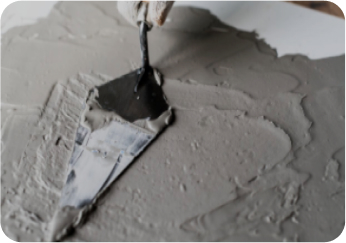
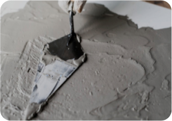

-
 ЦЕМ II/A-Ш 32,5Н (ПЦ 400 Д20)Применяется при производстве общестроительных работ.ЦЕМ II/A-Ш 32,5Н (ПЦ 400 Д20)Применяется при производстве общестроительных работ.ЦЕМ II/A-Ш 32,5Н (ПЦ 400 Д20)Применяется при производстве общестроительных работ.ЦЕМ II/A-Ш 32,5Н (ПЦ 400 Д20)Применяется при производстве общестроительных работ.ЦЕМ II/A-Ш 32,5Н (ПЦ 400 Д20)Применяется при производстве общестроительных работ.ЦЕМ II/A-Ш 32,5Н (ПЦ 400 Д20)Применяется при производстве общестроительных работ.ЦЕМ II/A-Ш 32,5Н (ПЦ 400 Д20)Применяется при производстве общестроительных работ.ЦЕМ II/A-Ш 32,5Н (ПЦ 400 Д20)Применяется при производстве общестроительных работ.
ЦЕМ II/A-Ш 32,5Н (ПЦ 400 Д20)Применяется при производстве общестроительных работ.ЦЕМ II/A-Ш 32,5Н (ПЦ 400 Д20)Применяется при производстве общестроительных работ.ЦЕМ II/A-Ш 32,5Н (ПЦ 400 Д20)Применяется при производстве общестроительных работ.ЦЕМ II/A-Ш 32,5Н (ПЦ 400 Д20)Применяется при производстве общестроительных работ.ЦЕМ II/A-Ш 32,5Н (ПЦ 400 Д20)Применяется при производстве общестроительных работ.ЦЕМ II/A-Ш 32,5Н (ПЦ 400 Д20)Применяется при производстве общестроительных работ.ЦЕМ II/A-Ш 32,5Н (ПЦ 400 Д20)Применяется при производстве общестроительных работ.ЦЕМ II/A-Ш 32,5Н (ПЦ 400 Д20)Применяется при производстве общестроительных работ.